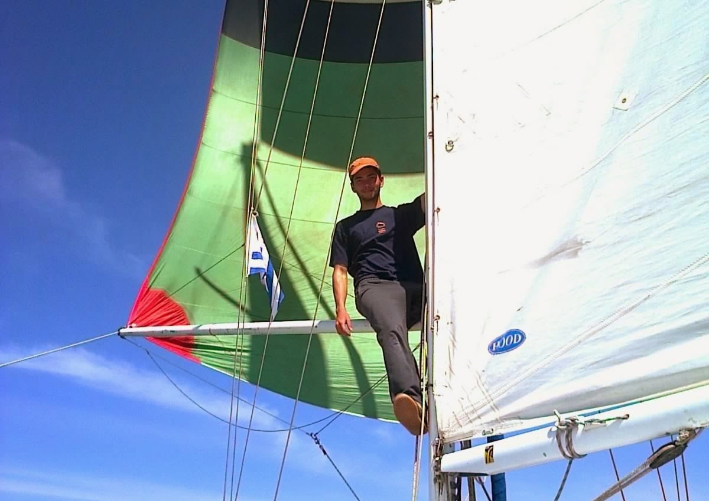
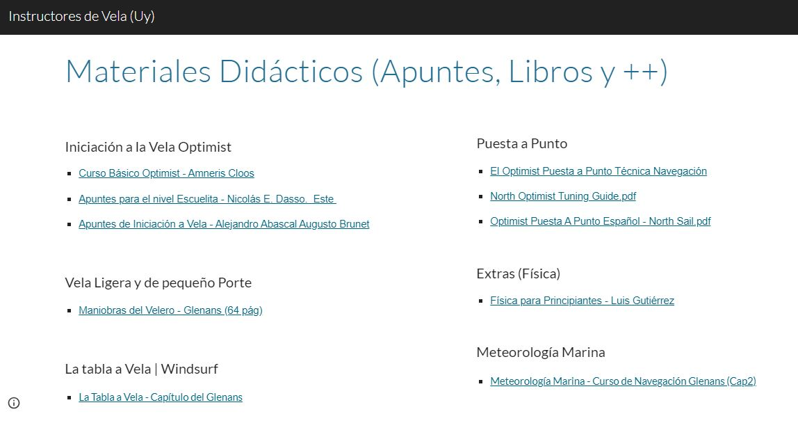
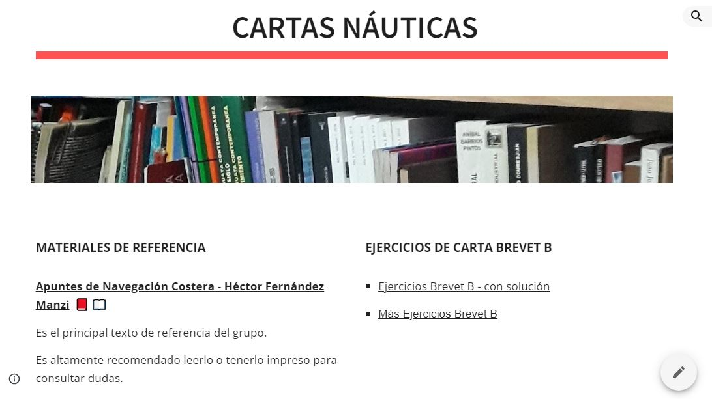
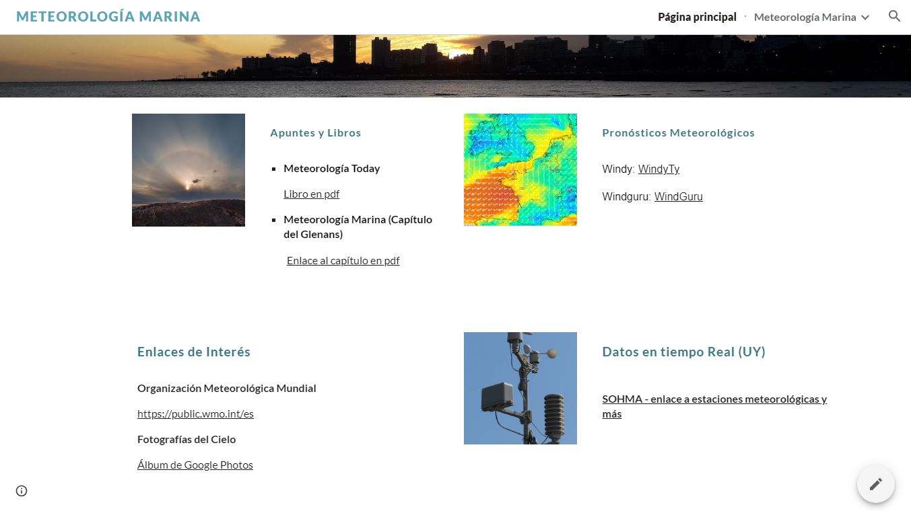

Náutica
¡Hola! Soy Ignacio Porrini, instructor náutico jubilado. Durante años me dediqué a enseñar navegación a vela, y en esta página reúno los recursos que fui recopilando en ese camino — pensados para todos los niveles de experiencia. Espero que sigan siendo de utilidad y se compartan libremente.
Recursos
Navegante Escuela Itinerante
Proyecto de promoción de la cultura náutica, principalmente a través de la docencia.
- Navegación a Vela Recreativa y de Crucero
- Clases Particulares o Grupales
- Charlas, Talleres y Jornadas de Estudio
- Preparación de permisos para navegar (brevet B, C y D)
Biblioteca Digital Náutica
Una selección de libros en PDF para el aprendizaje o perfeccionamiento de la práctica de navegación a vela.
Ver los libros en Google Drive
Sitio de Docencia e Instrucción de Vela

Grupo de Estudio — Cartas Náuticas
Surge por iniciativa de socios navegantes del Nautilus para compartir y continuar aprendiendo distintos aspectos de la teoría de navegación costera.
Sitio del Grupo de Cartas Náuticas

Grupo de Estudio — Meteorología Marina
Con características similares al de Cartas Náuticas: material de estudio, calendario de actividades y recursos de interés del grupo.

¿Consultas sobre náutica?
Esta página está en constante revisión, siempre será bienvenido todo tipo de feedback.
Escribime por WhatsApp